id condition trial congruency rt
1 1 control 1 congruent 660
2 1 control 2 incongruent 747
3 1 control 3 congruent 471
4 1 control 4 congruent 369
5 1 control 5 congruent 517
6 1 control 6 congruent 439Multilevel models 1: varying intercepts and pooling
So many names, one model

MLM review
\[{Y}_{i} = b_{0} + b_{1}X_{i} + ... +\epsilon_{i}\]
\[{Y}_{ij} = b_{0} + b_{1}X_{ij} + ... +\epsilon_{ij}\] where i refers to the cluster or group (e.g., a person) and j to the observations within it
Our running example: the Stroop task
- Lin, Saunders, Friese, Evans & Inzlicht (2020, Psychological Science), Study 1: an ego-depletion study. Each person did a hard (“deplete”) and an easy (“control”) task, each followed by a Stroop task.
- Our subset: 100 random participants, the first 30 Stroop trials after each task, correct trials only (5336 trials).
rtis reaction time in ms;congruencyis whether the word and ink color matched. - Trials (j) are nested in people (i).
Code
# how stroop.csv was made (the full data are in the afex package)
data(stroop, package = "afex")
set.seed(2027)
keep <- sample(unique(as.character(stroop$pno[stroop$study == "1"])), 100)
stroop %>%
filter(pno %in% keep, trialnum <= 30, acc == 1, !is.na(rt)) %>%
mutate(id = as.integer(factor(pno, levels = keep)), rt = round(rt * 1000)) %>%
select(id, condition, trial = trialnum, congruency, rt)Twenty people, twenty Stroop effects
Code
set.seed(114)
st %>%
filter(id %in% sample(unique(id), 20)) %>%
group_by(id, congruency) %>%
summarise(rt = mean(rt), .groups = "drop") %>%
ggplot(aes(x = congruency, y = rt, group = id, colour = factor(id))) +
geom_line() + geom_point() +
labs(x = NULL, y = "Mean RT (ms)") +
theme_classic(base_size = 14) + theme(legend.position = "none")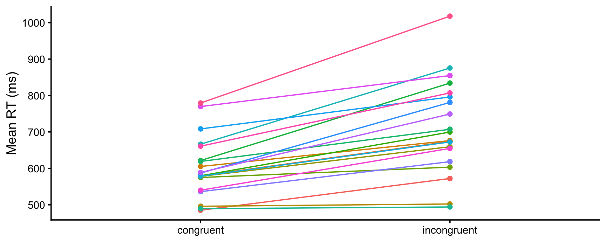
Everyone is slower on incongruent trials, but people differ in how fast they are overall and in how big their Stroop effect is. Today: the first of those (intercepts). Next time: the second (slopes).
Empty model
Level 1 \[{Y}_{ij} = \beta_{0i} + \varepsilon_{ij}\]
Level 2 \[{\beta}_{0i} = \gamma_{00} + U_{0i}\]
\[{U}_{0i} \sim N(0, \tau_{00}^{2})\] \[{\varepsilon}_{ij} \sim N(0, \sigma^{2})\]
The empty model, pictured
Code
set.seed(7)
eight <- st %>% filter(id %in% sample(unique(id), 8))
ggplot(eight, aes(x = factor(id), y = rt)) +
geom_jitter(width = .15, alpha = .3, size = 1) +
stat_summary(fun = mean, geom = "crossbar", width = .6, colour = "#4C78A8") + # each person's mean
geom_hline(yintercept = mean(st$rt), linetype = "dashed") + # grand mean
labs(x = "Person", y = "RT (ms)") + theme_classic(base_size = 14)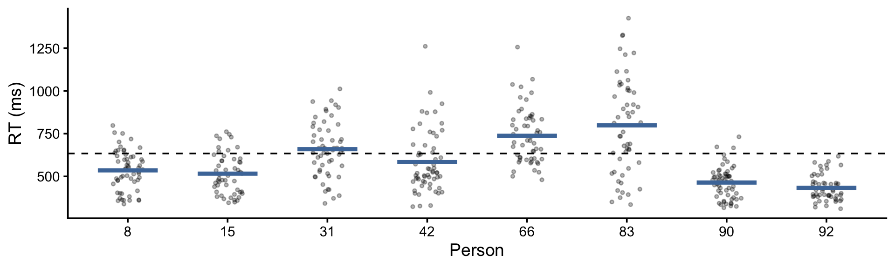
\[{Y}_{ij} = \gamma_{00} + U_{0i} + \varepsilon_{ij}\]
Dashed: \(\gamma_{00}\). Blue bars: each person’s mean, \(\gamma_{00} + U_{0i}\). Dots around a bar: \(\varepsilon_{ij}\). Akin to ANOVA if we treat \(U_{0i}\) as between-subjects variance and \(\varepsilon_{ij}\) as within-subjects variance.
Random and fixed effects
Level 1: \[{Y}_{ij} = \beta_{0i} + \varepsilon_{ij}\]
Level 2: \[{\beta}_{0i} = \gamma_{00} + U_{0i}\] Combined: \[{Y}_{ij} = \gamma_{00} + U_{0i} + \varepsilon_{ij}\]
\(U_{0i}\) is considered a random effect, as it varies across our grouping
\(\gamma_{00}\) is considered a fixed effect, as it is what is fixed (average) across our grouping
The empty model in brms
st.1 <-
brm(family = gaussian,
rt ~ 1 + (1 | id),
prior = c(prior(normal(650, 150), class = Intercept), # Stroop RTs average 600-700 ms
prior(normal(0, 100), class = sd), # people's averages differ by up to ~200 ms
prior(exponential(0.01), class = sigma)), # trial-to-trial noise, mean 100 ms
iter = 3000, warmup = 1000, chains = 4, cores = 4,
sample_prior = "yes",
data = st,
backend = "cmdstanr",
file = "st.1")Three priors, in milliseconds: the Intercept prior is for the average person, the sd prior is for how much people differ from that average (\(\sigma_0\)), and sigma is the trial-to-trial noise within a person. Where these come from is the last of the six intuitions below.
st.1 summary
Family: gaussian
Links: mu = identity
Formula: rt ~ 1 + (1 | id)
Data: st (Number of observations: 5336)
Draws: 4 chains, each with iter = 3000; warmup = 1000; thin = 1;
total post-warmup draws = 8000
Multilevel Hyperparameters:
~id (Number of levels: 100)
Estimate Est.Error l-95% CI u-95% CI Rhat Bulk_ESS Tail_ESS
sd(Intercept) 98.36 7.38 85.02 113.68 1.00 880 1870
Regression Coefficients:
Estimate Est.Error l-95% CI u-95% CI Rhat Bulk_ESS Tail_ESS
Intercept 633.92 10.15 613.67 653.56 1.01 487 957
Further Distributional Parameters:
Estimate Est.Error l-95% CI u-95% CI Rhat Bulk_ESS Tail_ESS
sigma 161.35 1.59 158.32 164.50 1.00 8762 5863
Draws were sampled using sample(hmc). For each parameter, Bulk_ESS
and Tail_ESS are effective sample size measures, and Rhat is the potential
scale reduction factor on split chains (at convergence, Rhat = 1).How much is between people? The ICC
The intraclass correlation: the share of the total variance that is between people,
\[\text{ICC} = \frac{\sigma_0^2}{\sigma_0^2 + \sigma^2}\]
Compute it draw by draw, so it gets its own posterior:
Reading the ICC
About 27% of the variation in RT is stable differences between people; about 73% is trial-to-trial variation within a person. Equivalently, two trials from the same person correlate about 0.27.
Single trials are noisy: that’s why reaction-time studies use many trials per person.
MLM as default and make it maximum
If you have data like this you should analyze like this! If you don’t, then you are losing information (GEE being a potential exception).
The question often is about which random effects to fit. There are multiple opinions, but mine is to start maximum, and then work downward (ie simplify) if necessary/consistent with theory. It doesn’t really hurt to include them, especially within Bayesian estimation!
MLM intuitions
Anytime you have repeated DVs you should use MLM as opposed to doing aggregation outside the model. While that should be your default, it is helpful to conceptualize why it is helpful.
- Aggregation is bad
- Regressions within regressions (ie coefficients as outcomes)
- Questions at different levels
- Variance decomposition
- Learning from other data through pooling/shrinkage
- Parameters that depend on parameters
1. Aggregation obscures hypotheses
What if people had more than 1 DV, like our Stroop trials? What do you do with multiple items, multiple trials, multiple ____ ?
Two options: (1) collapse and average across them, or (2) model every observation, nested in its person (MLM). The next slides show what (1) can hide.
Example
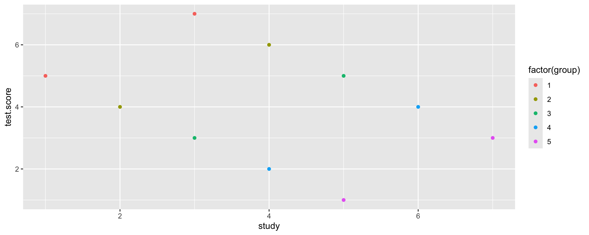
Aggregating
Could aggregate across group
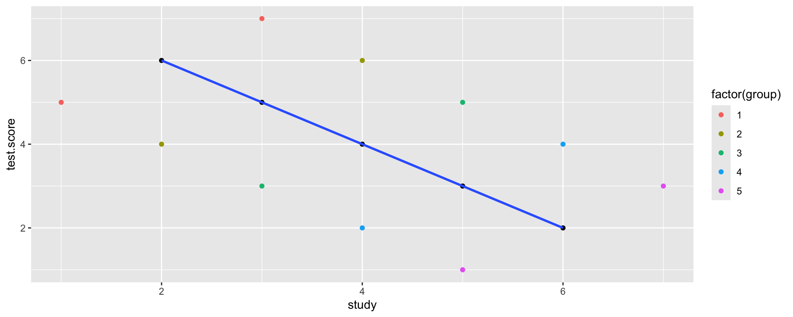
Separate lines for each group
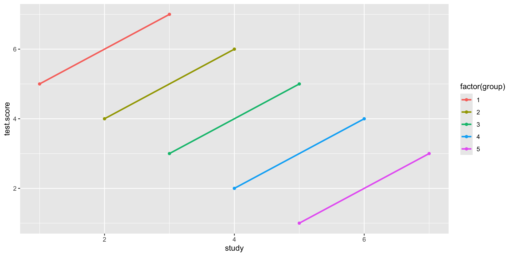
1. Aggregation obscures hypotheses
Between person H1: Do students who study more get better grades?
Within person H2: When a student studies, do they get better grades?
H1 and H2 are independent from one another! Aggregation collapses the two. When you have nested data with many DVs it is important to not aggregate.
#compositeskill
2. Regressions within regressions
Helps to take multilevel and split it into the different levels.
Level 1 is the smallest unit of analysis (students, waves, trials, family members)
Level 2 variables are what level 1 variables are “nested” in (people, schools, counties, families, dyads)
We use the level 1 coefficients as outcomes in a level 2 regression, while level 1 is also estimating its own regression (coefficients as outcomes).
Stroop example
We calculate stroop scores by looking at repeated trials of congruent vs not congruent. This is dummy coded such that the \(\beta_{1}\) reflects the average stroop effect. How much slower are people in incongruent trials?
\[Y_{i} = \beta_{0} + \beta_{1}X_{1} + \varepsilon_i\]
Stroop as an MLM
\[Y_{trials, i} = \beta_{0i} + \beta_{1i}X_{trial,i} + \varepsilon_{trial,i}\]
\[\beta_{0i} = \gamma_{00} + U_{0i}\] \[\beta_{1i} = \gamma_{10} +\gamma_{11}Age_i+ U_{1i}\]
Our B1 coefficient indexes the stroop effect. However, people differ on this stroop effect. There is some average effect (fixed effect) that people vary around. Each person has some personal \(\beta_1\), which we find using Level 1 data. From there we can also ask questions (with regressions) about that random variable.
People differ
Same idea with our data: each person has their own average RT, and people vary around the grand mean.
Code
set.seed(11)
three <- st %>% filter(id %in% sample(unique(id), 3))
ggplot(three, aes(x = trial, y = rt)) +
geom_point(alpha = .4) +
geom_hline(aes(yintercept = m), data = three %>% group_by(id) %>% summarise(m = mean(rt)), colour = "#4C78A8", linewidth = 1) +
geom_hline(yintercept = mean(st$rt), linetype = "dashed") +
facet_wrap(~ id, labeller = label_both) +
labs(x = "Trial", y = "RT (ms)", caption = "Blue: the person's mean. Dashed: the grand mean.") +
theme_classic(base_size = 13)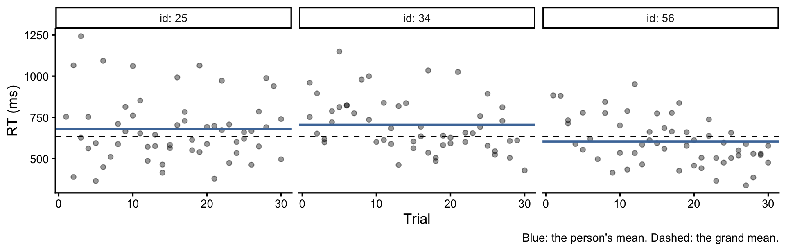
Distribution of person means
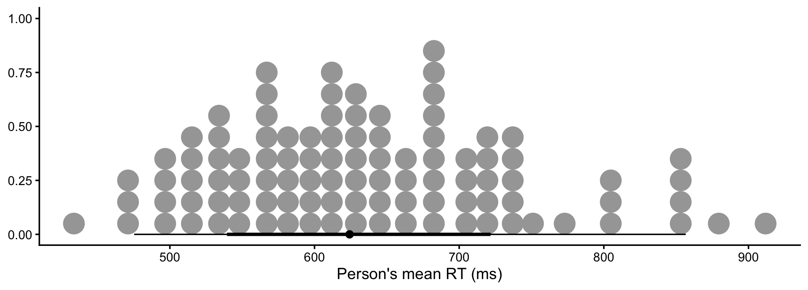
3. Different levels
To sum up the first two ways to think about regression, we take a relationship that could be simplified by aggregation, and conduct regressions from regressions. (Regression inception)
The third way is to think of questions at different levels. At level 1 we can ask lower-unit questions e.g., if trials are nested within person, what predicts lengthier trials?
If level 1 is made up of repeated observations, then we can ask level 1/observation level questions like does failure at the trial level impact future trial performance.
Level 2 questions
At level 2 we can ask broader-unit questions. E.g., is age associated with stroop differences
Often level 2 is between person variables.
Both levels are simple regressions. Level 2 uses coefficients from level 1 as DVs. Level 1 variables are time varying, level 2 variables are time invariant
4. Variance decomposition
For standard regression, we think of error as existing in one big bucket called \(\varepsilon\) . Everything that we do not know goes into that bucket, from measurement error to unmeasured important factors.
For MLMs we will be breaking up ( \(\varepsilon\) ) into multiple buckets. These useful “buckets” (Us) are what we refer to as random/varying effects.
\[Y_{trials, i} = \beta_{0i} + \beta_{1i}X_{trial,i} + \varepsilon_{trial}\] \[\beta_{0i} = \gamma_{00} + U_{0i}\] \[\beta_{1i} = \gamma_{10} +\gamma_{11}Z_i+ U_{1i}\]
One bucket of error

Assume a simple intercept only model where we aggregate across types of trials.
Person-specific buckets

A MLM intercept only model takes what was previously chalked up to error and reassigns it into person specific “buckets”
A model for the variance
Model for the means (like normal) and now we have a model for the variance (random effects!)
We will treat random effects as variables themselves e.g. individual differences in reaction time or stroop effect. They index how much people DIFFER on some effect. e.g. does everyone show the same stroop effect?
We can relate the random effects to other random effects e.g., do people who show an effect have a slower reaction time?
5. Shrinkage/partial pooling
We treat our group variable as coming from a population. All groups are alike (because they are from the same population), but different in their own way. Because of this it is helpful to use information from other groups to help make predictions.
We do this in standard regression where we make predictions based on values from the whole dataset (not just binned Xs). We want to pool as this leads to better predictions as we are not overfitting our data!
Where do the U’s come from?
If we take our simplified stroop effect model (an empty model)
\[Y_{trials, i} = \beta_{0i} + \varepsilon_{trial}\]
\[\beta_{0i} = \gamma_{00} + U_{0i}\]
Where does \(U_{0i}\) come from? If we calculated each by hand, through taking the average reaction time for a person i and subtracting that from the grand mean reaction time, would that equal \(U_{0i}\) ?
Complete, partial and no pooling
Complete assumes everyone is the same, with \(U_{0i}\) being zero for everyone.
No pooling is if we calculate every person’s effect with a separate regression, subtracting out the grand mean.
Partial pooling is in the middle, a weighted average between the two. For those with fewer trials there is less information for a particular individual, thus the complete pooling estimate will be given more weight. If someone has a lot of data, their weighted average is closer to no pooling.
Partial pooling prevents both over and under fitting of your data, leading to increased out of sample predictions.
Complete pooling
Ignores any dependency. Doesn’t learn from others, assumes everyone is the same: one mean for all. Underfits the model.
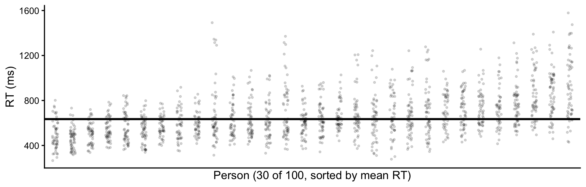
No pooling
Everyone is unique and we cannot learn from others: each person’s own mean. Leads to overfitting.

Partial pooling aka shrinkage aka regularization
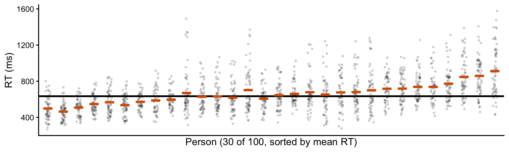
Orange: each person’s own mean (no pooling). Black: one mean for everyone (complete pooling). Partial pooling lands in between, pulling each person toward the black line, more so for people with little data. We’ll see real estimates once we fit the model.
Partial pooling as learning
Partial pooling aka shrinkage provides the optimal amount of learning from others. Assumes people come from the same distribution but are distinct from one another.
If you have a little data, then the safe bet is to look at the average. If you have a lot of data, you can ignore others.
In a way, this is similar to Bayesian reasoning where learning is based on how much information you have about a person with other people serving as a prior.
6. Parameters that depend on other parameters
\[\text{y}_{ij} \sim \operatorname{Normal}(\mu_{ij}, \sigma)\] \[\mu_{ij} = \beta_{0[i]}\]
\[\beta_{0[i]} \sim \operatorname{Normal}({\bar \mu}, \sigma_0)\] \[{\bar \mu} \sim {\operatorname{Normal}(650, 150)}\] \[\sigma_0 \sim {\operatorname{Half-Normal}(0, 100)}\] \[\sigma \sim {\operatorname{Exponential}(0.01)}\]
This is the model we fit as st.1.
Hyperprior
We now have a prior for the population of effects. We typically put a prior directly on parameters. Here, because we are using a multilevel model, we are interested in the population of intercepts, not just a single intercept.
Intercept in simple regression –> a (prior/posterior) distribution of possible scores
Intercept in mlm –> a distribution of group/cluster intercepts, described by its own mean (\(\bar\mu\)) and SD (\(\sigma_0\)). Those describe the population of people, not just the 100 we happened to sample.
Priors with their own priors
The person intercepts \(\beta_{0[i]}\) get a prior whose parameters (\(\bar\mu\), \(\sigma_0\)) are themselves estimated: a prior with its own priors.
Code
lab <- tribble(~x, ~y, ~label,
1.2, 3, "bar(mu) %~% Normal(650, 150)",
3.2, 3, "sigma[0] %~% HalfNormal(0, 100)",
2.2, 2, "beta[0*'['*i*']'] %~% Normal(bar(mu), sigma[0])",
4.2, 2, "sigma %~% Exponential(0.01)",
3.2, 1, "RT[ij] %~% Normal(beta[0*'['*i*']'], sigma)")
arrows <- tribble(~x, ~y, ~xend, ~yend,
1.3, 2.8, 2.0, 2.2, 3.1, 2.8, 2.4, 2.2,
2.4, 1.8, 3.0, 1.2, 4.0, 1.8, 3.4, 1.2)
ggplot() +
geom_segment(data = arrows, aes(x = x, y = y, xend = xend, yend = yend),
arrow = arrow(length = unit(0.25, "cm"), type = "closed"), colour = "grey50") +
geom_label(data = lab, aes(x = x, y = y, label = label), parse = TRUE, size = 5.5,
label.padding = unit(0.4, "lines"), fill = "grey95") +
annotate("text", x = -0.2, y = c(3, 2, 1), label = c("hyperpriors", "one per person", "one per trial"),
hjust = 0, colour = "grey40", size = 4.5) +
xlim(-0.2, 5) + ylim(0.6, 3.4) + theme_void()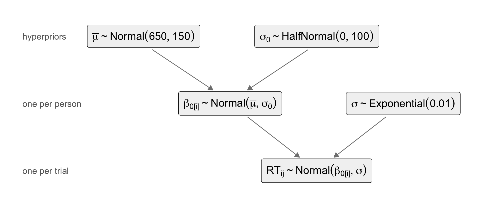
Two kinds of priors
If we are estimating a mean, we can divide that up into two priors:
A distribution of our best guess at the mean e.g., N(3,.5) means I am very confident in my guess vs N(3,50). This is all about the mean.
A distribution that represents the spread around that mean e.g., N(0,1) suggests small spread vs (0,100) suggest people may differ a lot (Even though the distribution has the same mean).
Fixed effect describes #1 whereas random effects describe #2
A single-level model
Notice we have one less parameter we are estimating.
st.2 summary
Family: gaussian
Links: mu = identity
Formula: rt ~ 1
Data: st (Number of observations: 5336)
Draws: 4 chains, each with iter = 3000; warmup = 1000; thin = 1;
total post-warmup draws = 8000
Regression Coefficients:
Estimate Est.Error l-95% CI u-95% CI Rhat Bulk_ESS Tail_ESS
Intercept 634.22 2.64 629.03 639.37 1.00 5426 5241
Further Distributional Parameters:
Estimate Est.Error l-95% CI u-95% CI Rhat Bulk_ESS Tail_ESS
sigma 188.92 1.84 185.37 192.67 1.00 7030 5344
Draws were sampled using sample(hmc). For each parameter, Bulk_ESS
and Tail_ESS are effective sample size measures, and Rhat is the potential
scale reduction factor on split chains (at convergence, Rhat = 1).Comparing the two
model elpd_diff se_diff p_worse diag_diff diag_elpd
st.1 0.0 0.0 NA
st.2 -793.2 38.2 1.00 The MLM wins by a mile: knowing who produced a trial helps predict its RT.
Same intercept, different meaning
Notice how the intercept estimate is about the same in each of these models, but the MLM’s is less certain (posterior SD 10.1 vs. 2.6 ms): it knows the 100 people differ, so it is less sure about the average person. Conceptually they are different too. The intercept is directly modeled in the standard regression. In the MLM it is better thought of as the map of the distribution of random effects.
The population is larger than what we have. This is true for almost anything we do. We sample paradigms, we sample people, we usually never have a full population under our study. Don’t we want to model that variation?
An index model: one mean per person
With mlm we treated means as coming from a population of means. And thus there was a best guess of the mean (intercept) and variation around that guess (SD). With anova we ignored the variation. But we could, in bayes, still examine that variation. Let’s fit an index model, where each person gets their own mean. (No priors given, so brms uses flat priors on all 100 means.)
Fixed effects vs random effects
The index model is what economists call a fixed effects model: one mean per person, nothing shared across people.
- Why economists like it: comparing each person only to themselves controls for every stable person-level confounder, measured or not. An MLM gets the same protection by person-mean centering its predictors (within vs. between effects, next lecture).
- Why we usually prefer random effects: they split the variance into between- and within-person parts, they pool (better predictions for people with little data), and they allow person-level predictors, which a fixed effects model can’t estimate.
- In psychology the clusters are almost always a sample from a bigger population (people, sites, labs), which is exactly what random effects assume.
st.id summary
Family: gaussian
Links: mu = identity
Formula: rt ~ 0 + id.f
Data: st (Number of observations: 5336)
Draws: 4 chains, each with iter = 3000; warmup = 1000; thin = 1;
total post-warmup draws = 8000
Regression Coefficients:
Estimate Est.Error l-95% CI u-95% CI Rhat Bulk_ESS Tail_ESS
id.f1 513.03 20.94 471.78 553.99 1.00 10377 5938
id.f2 639.10 22.10 595.46 682.34 1.00 11544 5945
id.f3 606.08 22.19 563.19 649.36 1.00 10242 5033
id.f4 854.03 22.02 810.34 897.95 1.00 10763 6052
id.f5 586.71 23.07 540.95 632.24 1.00 9963 5998
id.f6 605.89 22.04 560.97 648.66 1.00 9764 5595
id.f7 576.24 22.15 533.19 619.80 1.00 9969 5780
id.f8 535.96 21.79 493.65 578.88 1.00 9752 6011
id.f9 660.24 21.89 617.76 703.36 1.00 10722 5569
id.f10 545.39 23.81 498.48 590.86 1.00 9582 6142
id.f11 571.91 20.65 532.08 612.07 1.00 10486 5593
id.f12 911.65 21.42 869.43 953.27 1.00 10337 6040
id.f13 540.22 22.52 496.06 584.64 1.00 10189 6296
id.f14 687.00 22.21 643.08 730.75 1.00 9556 6372
id.f15 516.21 22.65 471.73 560.55 1.00 10940 5900
id.f16 627.52 22.50 583.91 671.55 1.00 9110 6439
id.f17 509.56 21.51 468.14 551.07 1.00 11455 6500
id.f18 847.33 21.26 806.47 889.69 1.00 10977 6037
id.f19 569.73 22.80 524.93 614.63 1.00 10484 5633
id.f20 547.44 21.96 504.45 590.63 1.00 9859 5592
id.f21 732.14 20.97 690.92 773.83 1.00 9339 6252
id.f22 508.04 22.37 463.82 551.71 1.00 9462 5887
id.f23 573.31 21.45 531.38 615.75 1.00 9803 6219
id.f24 561.80 22.96 516.86 607.85 1.00 10842 5253
id.f25 679.81 21.19 638.31 720.86 1.00 9740 5890
id.f26 567.94 23.42 521.64 614.00 1.00 9968 6096
id.f27 675.90 23.01 630.69 720.88 1.00 8813 5860
id.f28 748.53 24.94 699.82 797.83 1.00 11217 6134
id.f29 498.50 22.09 454.90 542.38 1.00 9643 5740
id.f30 624.70 22.38 581.03 669.26 1.00 10333 5993
id.f31 658.91 21.56 617.21 701.52 1.00 9351 5999
id.f32 606.09 22.08 562.10 649.14 1.00 10604 5439
id.f33 582.58 21.66 540.29 624.70 1.00 11509 5599
id.f34 705.23 22.57 660.88 749.27 1.00 10238 5339
id.f35 607.17 21.86 563.91 650.08 1.00 10586 5801
id.f36 669.91 22.59 625.87 714.41 1.00 10571 5055
id.f37 701.69 21.25 660.63 743.64 1.00 9519 5957
id.f38 499.85 22.00 457.04 542.46 1.00 9770 6242
id.f39 528.27 23.49 482.25 575.12 1.00 9531 6179
id.f40 618.09 21.70 575.12 661.76 1.00 9866 5817
id.f41 689.25 25.00 639.41 737.37 1.00 9515 5659
id.f42 584.06 21.30 541.81 625.22 1.00 10600 5879
id.f43 535.91 23.12 490.49 581.47 1.00 9986 6347
id.f44 722.31 21.23 680.87 764.40 1.00 10049 6268
id.f45 676.19 22.31 631.73 719.63 1.00 9091 5586
id.f46 853.40 23.44 808.16 898.93 1.00 8865 5661
id.f47 649.53 22.62 604.27 693.89 1.00 10184 6013
id.f48 736.57 23.29 691.75 782.82 1.00 9649 6304
id.f49 645.86 23.75 599.61 692.72 1.00 9022 5887
id.f50 490.89 21.91 447.07 533.53 1.00 9444 5956
id.f51 678.38 21.95 634.72 721.00 1.00 10942 6242
id.f52 599.86 22.35 556.31 643.57 1.00 9929 5591
id.f53 742.84 22.31 699.18 786.13 1.00 10159 6114
id.f54 710.10 22.33 666.27 754.32 1.00 9112 5857
id.f55 676.28 23.42 630.45 722.24 1.00 10269 5803
id.f56 603.99 22.08 560.74 646.80 1.00 8805 5687
id.f57 502.77 22.54 458.17 546.30 1.00 9323 5711
id.f58 606.25 21.13 564.62 647.85 1.00 10528 5964
id.f59 545.86 21.56 504.36 588.75 1.00 10052 5738
id.f60 631.62 22.19 587.62 674.70 1.00 9988 5975
id.f61 656.28 22.02 612.55 698.71 1.00 9564 6101
id.f62 609.25 21.53 567.16 651.48 1.00 10238 5979
id.f63 684.62 21.44 642.79 727.09 1.00 10444 6246
id.f64 544.34 21.85 501.94 587.33 1.00 10856 5418
id.f65 590.18 22.33 546.12 634.07 1.00 9451 5806
id.f66 737.38 21.82 694.94 780.55 1.00 8727 5823
id.f67 521.67 22.15 478.33 565.53 1.00 9424 5940
id.f68 639.36 21.18 598.27 680.43 1.00 11138 6136
id.f69 721.75 21.92 678.69 765.24 1.00 10220 6127
id.f70 718.20 21.64 675.59 760.91 1.00 9140 5318
id.f71 623.22 21.38 581.44 665.34 1.00 8715 5830
id.f72 629.86 23.09 585.02 674.87 1.00 9991 5903
id.f73 603.93 22.13 561.05 646.79 1.00 9513 5216
id.f74 567.29 21.60 524.47 609.96 1.00 9409 6140
id.f75 633.82 22.93 588.61 678.51 1.00 10874 5783
id.f76 773.06 21.34 731.52 815.51 1.00 8982 4962
id.f77 560.26 22.25 516.46 604.48 1.00 10047 6096
id.f78 478.02 21.43 435.90 520.33 1.00 10358 5516
id.f79 811.29 22.19 767.74 854.50 1.00 8813 5811
id.f80 532.62 23.15 485.96 577.65 1.00 9288 6179
id.f81 627.26 22.67 583.41 671.06 1.00 9100 6223
id.f82 645.02 21.61 602.95 686.81 1.00 11145 5859
id.f83 798.17 22.02 755.46 841.62 1.00 11091 6131
id.f84 719.51 22.45 675.10 763.93 1.00 9773 5983
id.f85 586.94 21.46 544.54 628.30 1.00 9180 5961
id.f86 686.55 21.43 645.04 728.52 1.00 10509 5891
id.f87 651.59 21.96 609.56 694.43 1.00 11328 6328
id.f88 472.84 21.39 431.18 515.56 1.00 10865 5821
id.f89 803.93 21.62 761.60 845.62 1.00 8283 6387
id.f90 464.33 21.13 423.54 505.78 1.00 9825 6232
id.f91 541.22 21.22 499.94 582.81 1.00 10091 5880
id.f92 433.21 22.33 389.30 476.91 1.00 10676 6335
id.f93 879.92 22.56 836.22 924.04 1.00 9493 5815
id.f94 572.32 23.10 526.86 617.72 1.00 10432 5797
id.f95 596.24 23.09 551.25 641.58 1.00 9955 5878
id.f96 731.49 20.79 691.12 772.35 1.00 10901 6237
id.f97 607.76 22.29 564.26 651.21 1.00 11651 6036
id.f98 716.47 22.58 672.16 760.23 1.00 8884 6088
id.f99 700.02 21.62 658.34 742.81 1.00 10884 5843
id.f100 858.52 20.62 817.71 899.23 1.00 10195 5974
Further Distributional Parameters:
Estimate Est.Error l-95% CI u-95% CI Rhat Bulk_ESS Tail_ESS
sigma 161.38 1.55 158.38 164.45 1.00 10523 6033
Draws were sampled using sample(hmc). For each parameter, Bulk_ESS
and Tail_ESS are effective sample size measures, and Rhat is the potential
scale reduction factor on split chains (at convergence, Rhat = 1).Person means from the index model
# A tibble: 100 × 3
id mean sd
<chr> <dbl> <dbl>
1 b_id.f1 513. 20.9
2 b_id.f10 545. 23.8
3 b_id.f100 859. 20.6
4 b_id.f11 572. 20.7
5 b_id.f12 912. 21.4
6 b_id.f13 540. 22.5
7 b_id.f14 687. 22.2
8 b_id.f15 516. 22.6
9 b_id.f16 628. 22.5
10 b_id.f17 510. 21.5
# ℹ 90 more rowsPartial pooling/Shrinkage
\(\sigma_0\) (our random effect) can help turn on/off/adjust shrinkage.
Setting SD to zero says everyone is the same. Infinite SD suggests no pooling (and major differences in pop values). In the middle gives you partial pooling.
We use our prior of \(\sigma_0\) plus our data to get an estimate of each \(\beta_{0[i]}\). This is how we accurately partial pool.
Pulling out the random effects
# A tibble: 100 × 8
id term r_id .lower .upper .width .point .interval
<int> <chr> <dbl> <dbl> <dbl> <dbl> <chr> <chr>
1 1 Intercept -116. -161. -70.3 0.95 median qi
2 2 Intercept 4.80 -40.5 50.3 0.95 median qi
3 3 Intercept -27.0 -74.5 20.0 0.95 median qi
4 4 Intercept 209. 163. 257. 0.95 median qi
5 5 Intercept -44.5 -92.2 2.24 0.95 median qi
6 6 Intercept -26.9 -72.9 19.0 0.95 median qi
7 7 Intercept -55.4 -102. -9.58 0.95 median qi
8 8 Intercept -93.7 -140. -49.2 0.95 median qi
9 9 Intercept 25.3 -22.1 70.1 0.95 median qi
10 10 Intercept -84.1 -132. -35.0 0.95 median qi
# ℹ 90 more rowsr_idare the \(U_{0i}\): each person’s deviation from the fixed intercept, in ms (like lme4’sranef()).get_variables(st.1)lists everything in the posterior.[id, term]names the indices: person, and which effect (here onlyIntercept).
Each person’s intercept
The fixed effect plus each person’s deviation (like lme4’s coef()), computed draw by draw:
# A tibble: 100 × 8
id term person_I .lower .upper .width .point .interval
<int> <chr> <dbl> <dbl> <dbl> <dbl> <chr> <chr>
1 1 Intercept 518. 478. 559. 0.95 median qi
2 2 Intercept 639. 597. 681. 0.95 median qi
3 3 Intercept 606. 564. 651. 0.95 median qi
4 4 Intercept 843. 801. 886. 0.95 median qi
5 5 Intercept 589. 545. 634. 0.95 median qi
6 6 Intercept 607. 566. 648. 0.95 median qi
7 7 Intercept 578. 537. 621. 0.95 median qi
8 8 Intercept 540. 498. 581. 0.95 median qi
9 9 Intercept 659. 615. 701. 0.95 median qi
10 10 Intercept 550. 505. 596. 0.95 median qi
# ℹ 90 more rowsShrinkage, in one figure
Code
# for a paper: add ggsave("shrinkage.png", width = 6.5, height = 4.5) after the plot
raw <- st %>% group_by(id) %>% summarise(raw = mean(rt), n = n())
pooled <- st.1 %>%
spread_draws(b_Intercept, r_id[id, term]) %>%
mutate(pooled = b_Intercept + r_id) %>%
group_by(id) %>%
summarise(pooled = mean(pooled))
grand <- fixef(st.1)["Intercept", "Estimate"]
shrink <- left_join(raw, pooled, by = "id") %>% mutate(id = fct_reorder(factor(id), raw))
ggplot(shrink, aes(y = id)) +
geom_vline(xintercept = grand, linetype = "dashed", colour = "grey50") +
geom_segment(aes(x = raw, xend = pooled, yend = id), colour = "grey60",
arrow = arrow(length = unit(0.12, "cm"), type = "closed")) +
geom_point(aes(x = raw), shape = 21, fill = "white", size = 2) +
geom_point(aes(x = pooled), colour = "#4C78A8", size = 1.6) +
labs(x = "Mean RT (ms)", y = "Person (sorted by raw mean)",
caption = "Open circles: each person's raw mean (no pooling). Blue: partially pooled estimate from the empty model.\nArrows show shrinkage toward the grand mean (dashed): small here, and biggest for the most extreme people.") +
theme_classic(base_size = 13) +
theme(axis.text.y = element_blank(), axis.ticks.y = element_blank(), plot.caption = element_text(hjust = 0))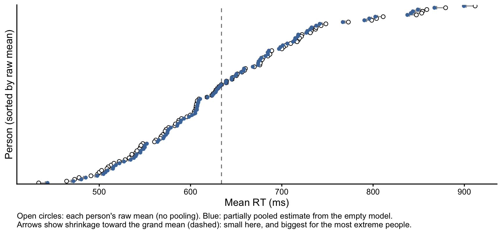
How much shrinkage?
For the empty model, each person’s estimate is (approximately) a weighted average of their own mean and the grand mean:
\[\hat\beta_{0[i]} \approx w_i\, \bar y_i + (1 - w_i)\, \bar\mu \qquad w_i = \frac{n_i}{n_i + \sigma^2 / \sigma_0^2}\]
- Here \(\sigma\) = 161 ms and \(\sigma_0\) = 98 ms, so \(\sigma^2/\sigma_0^2\) = 2.7.
- With 42 to 60 trials each, people keep 94–96% of their own mean: little shrinkage. With only 5 trials, they’d keep 65%.
- More trials, or bigger differences between people (\(\sigma_0\)), mean less shrinkage. Next time the Stroop effect (a difference between two noisy means) shrinks much more.
Person intercepts with intervals
Code
st.1 %>%
spread_draws(b_Intercept, r_id[id, term]) %>%
median_qi(person_I = b_Intercept + r_id) %>%
ggplot(aes(y = reorder(id, person_I), x = person_I, xmin = .lower, xmax = .upper)) +
geom_pointinterval() + labs(x = "Mean RT (ms)", y = "Person") +
theme_classic(base_size = 13) + theme(axis.text.y = element_blank(), axis.ticks.y = element_blank())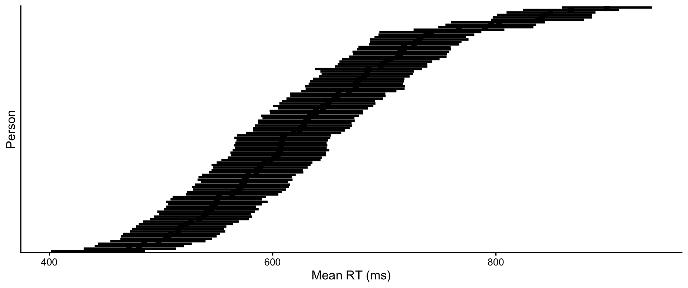
Forcing complete pooling
Set prior for random effect to almost zero for complete pooling.
st.1p summary
Family: gaussian
Links: mu = identity
Formula: rt ~ 1 + (1 | id)
Data: st (Number of observations: 5336)
Draws: 4 chains, each with iter = 3000; warmup = 1000; thin = 1;
total post-warmup draws = 8000
Multilevel Hyperparameters:
~id (Number of levels: 100)
Estimate Est.Error l-95% CI u-95% CI Rhat Bulk_ESS Tail_ESS
sd(Intercept) 0.00 0.00 0.00 0.00 1.00 6604 4745
Regression Coefficients:
Estimate Est.Error l-95% CI u-95% CI Rhat Bulk_ESS Tail_ESS
Intercept 634.27 2.62 629.18 639.35 1.00 18457 5490
Further Distributional Parameters:
Estimate Est.Error l-95% CI u-95% CI Rhat Bulk_ESS Tail_ESS
sigma 188.89 1.84 185.32 192.55 1.00 18702 5477
Draws were sampled using sample(hmc). For each parameter, Bulk_ESS
and Tail_ESS are effective sample size measures, and Rhat is the potential
scale reduction factor on split chains (at convergence, Rhat = 1).Complete pooling, pictured
Code
st.1p %>%
spread_draws(b_Intercept, r_id[id, term]) %>%
median_qi(person_I = b_Intercept + r_id) %>%
left_join(st %>% group_by(id) %>% summarise(raw = mean(rt)), by = "id") %>%
ggplot(aes(x = reorder(factor(id), raw))) +
geom_point(aes(y = person_I), colour = "orange2") +
geom_point(aes(y = raw), shape = 1) +
geom_hline(yintercept = fixef(st.1)["Intercept", "Estimate"]) +
labs(title = "complete pooling", x = "Person (sorted by raw mean)", y = "RT (ms)") +
theme_classic(base_size = 13) + theme(axis.text.x = element_blank(), axis.ticks.x = element_blank())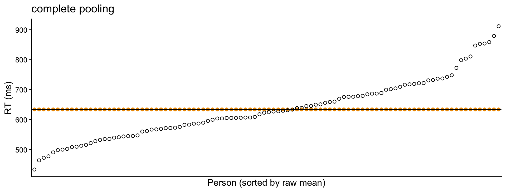
No pooling
No pooling means you are not learning from other data, which is by default not an MLM model. We already fit this fixed effects model above (st.id).
No pooling, pictured
Code
as_draws_df(st.id) %>%
pivot_longer(starts_with("b_id.f"), names_to = "id", names_prefix = "b_id.f",
names_transform = list(id = as.integer), values_to = "rt_i") %>%
group_by(id) %>%
median_qi(rt_i) %>%
left_join(st %>% group_by(id) %>% summarise(raw = mean(rt)), by = "id") %>%
ggplot(aes(x = reorder(factor(id), raw))) +
geom_point(aes(y = rt_i), colour = "orange2") +
geom_point(aes(y = raw), shape = 1) +
geom_hline(yintercept = fixef(st.1)["Intercept", "Estimate"]) +
labs(title = "NO pooling", x = "Person (sorted by raw mean)", y = "RT (ms)") +
theme_classic(base_size = 13) + theme(axis.text.x = element_blank(), axis.ticks.x = element_blank())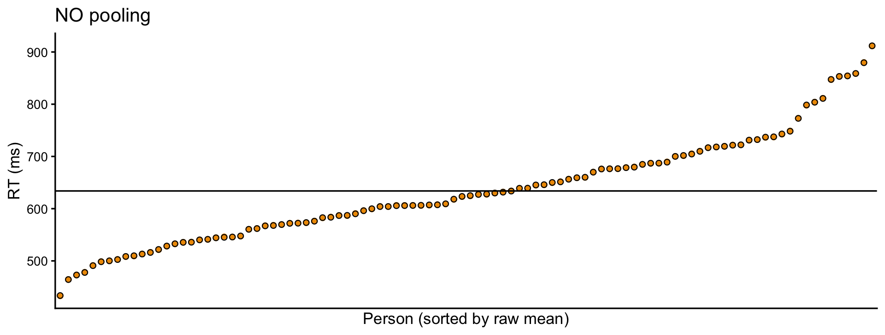
The MLM picks the amount of pooling
MLM will automatically create the best fitting model – balancing between over and under fitting. It identifies the value of sigma of the random effect that is ideal.
This “knob” can be manually turned to different values and we can look at the fit of the model via LOO or WAIC. But we don’t need to!
Comparing no, complete, and partial pooling
model elpd_diff se_diff p_worse diag_diff diag_elpd
st.1 0.0 0.0 NA
st.id -2.4 2.6 0.82 |elpd_diff| < 4
st.1p -793.2 38.2 1.00 - Complete pooling is far worse: people really do differ.
- Partial pooling and no pooling are close: with ~53 trials each, people’s means are already well estimated, so there is little to pool. With few trials per person (or noisy effects, next time) partial pooling pulls clearly ahead.
Level 1 predictors
Level 1 is where you have data that repeats within your grouping or clustering data. Is your cluster classrooms? Then students are level 1. Is your cluster people? Then observations are level 1.
\[{Y}_{ij} = \beta_{0i} + \beta_{1i}X_{ij} + \varepsilon_{ij}\] Notice the subscripts on X: these predictors vary across groups (i) and within a group (j). So if your grouping (i) is people, then j refers to different observations.
Level 2
Level 2 takes the parameters at level 1 and decomposes them into a fixed component ( \(\gamma\) ) that reflects the average and, if desired, the individual deviations around that fixed effect (U).
\[ \begin{aligned} \text{Level 1:}\quad Y_{ij} &= \beta_{0i} + \beta_{1i}X_{ij} + \varepsilon_{ij} \\ \text{Level 2:}\quad \beta_{0i} &= \gamma_{00} + U_{0i} \\ \beta_{1i} &= \gamma_{10} \end{aligned} \]
Level 1 predictors in brms
Our level-1 predictor: whether the trial is incongruent (1) or congruent (0).
\[\text{rt}_{ij} \sim \operatorname{Normal}(\mu_{ij}, \sigma)\] \[\mu_{ij} = \beta_{0[i]} + \beta_{1}\,\text{Incongruent}_{ij}\]
\[\beta_{0[i]} \sim \operatorname{Normal}({\bar \mu}, \sigma_0)\] \[{\bar \mu} \sim {\operatorname{Normal}(650, 150)}\] \[\sigma_0 \sim {\operatorname{Half-Normal}(0, 100)}\] \[\beta_{1} \sim {\operatorname{Normal}(0, 100)}\] \[\sigma \sim {\operatorname{Exponential}(0.01)}\]
A fixed slope
Notice that the slope has no hyperprior (no [i], no \(\sigma_1\)). What does that mean? It is not random: everyone gets the same Stroop effect. People could still differ in their slopes if we added predictors of the slope (cross-level interactions), but there is no U to represent leftover random variation. To get that we need a parameter for it, and we don’t have one yet (next time).
Fitting st.3
st.3 <-
brm(family = gaussian,
rt ~ 1 + congruency + (1 | id),
prior = c(prior(normal(650, 150), class = Intercept),
prior(normal(0, 100), class = b), # the Stroop effect, in ms
prior(normal(0, 100), class = sd),
prior(exponential(0.01), class = sigma)),
iter = 3000, warmup = 1000, chains = 4, cores = 4,
file = "st.3",
backend = "cmdstanr",
data = st)st.3 summary
Family: gaussian
Links: mu = identity
Formula: rt ~ 1 + congruency + (1 | id)
Data: st (Number of observations: 5336)
Draws: 4 chains, each with iter = 3000; warmup = 1000; thin = 1;
total post-warmup draws = 8000
Multilevel Hyperparameters:
~id (Number of levels: 100)
Estimate Est.Error l-95% CI u-95% CI Rhat Bulk_ESS Tail_ESS
sd(Intercept) 99.42 7.60 86.04 115.81 1.01 814 1765
Regression Coefficients:
Estimate Est.Error l-95% CI u-95% CI Rhat Bulk_ESS
Intercept 608.37 10.44 587.61 628.68 1.01 425
congruencyincongruent 87.81 4.70 78.72 96.86 1.00 9005
Tail_ESS
Intercept 808
congruencyincongruent 6223
Further Distributional Parameters:
Estimate Est.Error l-95% CI u-95% CI Rhat Bulk_ESS Tail_ESS
sigma 156.21 1.53 153.22 159.18 1.00 10444 6095
Draws were sampled using sample(hmc). For each parameter, Bulk_ESS
and Tail_ESS are effective sample size measures, and Rhat is the potential
scale reduction factor on split chains (at convergence, Rhat = 1).The Stroop effect: incongruent trials are about 88 ms slower, for everyone (a fixed slope).
Three kinds of prediction
| What you want | brms / marginaleffects | Uncertainty from |
|---|---|---|
| The average person | re_formula = NA |
the fixed effects only |
| A person in the data | re_formula = NULL (the default) |
fixed effects + that person’s estimated U |
| A new, unseen person | allow_new_levels = TRUE, sample_new_levels = "gaussian" |
fixed effects + a U drawn from Normal(0, \(\sigma_0\)) |
A known person vs. a new person
An incongruent trial for person 6 (in the data) and for someone we’ve never seen:
Estimate 2.5 % 97.5 %
669 628 712
695 496 895
Type: response
Estimate 2.5 % 97.5 %
696 675 717
Type: responseWhy is the new person so uncertain?
- For person 6, the model has their trials; for person 9999 it only knows people vary with SD \(\sigma_0\) (about 99 ms), so the interval is far wider.
- The average person’s interval is the narrowest: it’s about the mean, not about any individual.
- None of these is a prediction for a single trial: that would add the trial-to-trial noise \(\sigma\) (
predict()/posterior_predict()).